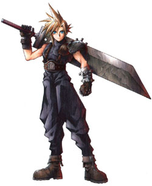

Tokio Hotel
 De: La Frikipedia, la enciclopedia extremadamente seria.
De: La Frikipedia, la enciclopedia extremadamente seria.
De la serie Grupos musicales:
El bateria parece un poco más normal
| Origen
|
No se sabe con exactitud, pero se cree que de Checoslovaquia
|
| Tiempo
|
Llevan "tocando" 8 años y un día
|
| Estilo
|
Jajajajaja ¿pero tu los has visto?...estilo dice
|
| Discográfica/s
|
Singapoor Records S.A
|
| Miembros
|
Bill Kaulitz (el que no se sabe lo que es), Tom Kaulitz (el de las rastas), Georg Listing (el del pelo lamido) y Gustav Schafer (el menos anormal).
|
| Estado
|
podrido/caducado
|
| Sitio web
|
www.quenosomosemosjoder.uk
|
Este grupo supuestamente alemán (realmente son de Europa del Este, pero es más fácil decir que son alemanes) lleva haciendo música de un estilo bastante discutido (que si es rock gótico, que no, que es emo, que si son una fusión de "influencas" distintas, que si son unos inútiles Dios sabe qué...) desde hace unos años y un día (así suena más a condena), y andan por ahí muchas versiones sobre la historia de estos chicos, pero todas bastante parecidas.
Orígen

A Marianito el barbitas le ponen (musssho)
No se sabe exactamente cuál fue el motivo por el que estos cuatro seres huyeron de La República anarco-pacifísta de Bielorusia y vinieron a Occidente, pero ciertas teorías sostienen que lo hicieron huyendo de un numeroso grupo de fans chochogóticas bielorusas que les perseguían babeantes, gimientes y con ganas de marcha. Estos cuatro sufridores, hartos de tanto agobio, vinieron a Europa del Oeste y encontraron la ayuda que necesitaban en unos hombres trajeados y con gafas de sol, que les proporcionaron un nuevo aspecto en este continente. Hay que señalar que a estos les tocó mejor disfraz que a Michael Jackson, pero esto se debe a que pagaron con sudor y semen sangre, aunque a Bill Kauitz parece ser que le tocó el peor cuerpo, ya que estaba en el baño cuando los demas eligieron el suyo. Ésto le creó una rabieta que no ha sido capaz de superar hasta día de hoy, lo que produce que llore por las noches abrazado a un peluche se Super Ñ.
Para todos los componentes del grupo fue muy duro integrarse en este continente desconocido para ellos, por lo que todos sufrieron diversos traumas en el proceso de adaptación por parte de familias de gitanos.
Orígen del nombre
Este nombre lo eligieron echándolo a suertes, y tenían cuatro posibilidades:
- El nombre de la marca de la gomina preferida de Bill.
- El nombre de la última tia
que se había tirado de la que se había enamorado Georg.
- "Информация" (nombre que tuvieron que descartar para no ser descubierta su verdadera identidad).
- El nombre del motel de mala muerte del que era dueño el tíoabuelo de Gustav.
Evidentemente, al final salió este último nombre, gracias a que nuestro amigo Gustavo amenazó a sus compañeros con romperles una baqueta en la cara. Esto provocó una nueva rabieta de Bill (que quería el nombre de su gomina), pero se tranquilizo cuando le amenazaron con mojarle el pelo.
Historia de los componentes
En esta foto se aprecia la homosexualidad del cantante del grupo
Evolución del cantante en la Tierra
- Bill Kaulitz: Es
la el cantante del grupo. El trauma producido por ser el último en elegir cuerpo le ha llevado a provar distintos cortes de pelo, colores, maquillaje, looks... Esto se debe a que el cuerpo que le asignaron no estaba sexualmente definido del todo, ya que los sexos en Omicron Persey 8 no son iguales que aquí. Esto le confundió un poco, y le llevó a utilizar ropa y demas artículos femeninos. Además, Bill Kaulitz tuvo que dejar la fea costumbre que tenía en su planeta natal de intercambiar las novias con su hermano gemelo (el rastas) ya que allí su aspecto era idéntico, pero al llegar a la tierra dejó de colar el truquito, debido al poco parecido entre sus cuerpos terrestres, y esto le causó un segundo trauma. Estos dos traumas citados son los que le llevan a componer y cantar canciones tan sumamente... "melancólicas". Se cree que es Madara Uchiha
 su cantante gay, en los videojuegos
esta es la razón de por que Bill y Tom son gays
- Tom Kaulitz: Es el guitarrista, el hermano gemelo de Bill Kaulitz (si, increíblemente si, pero es que a los hombres trajeados no les quedaban más cuerpos iguales), también llamado el "rastas". Lo que más cabe destacar en este omicroniano es la batalla Piojos vs. Liendres que tiene lugar en su cabeza. Esta se remonta al año en que vinieron a este, nuestro planeta. Este pobre omicroniano desconocía por completo las normas de higiene mínimas que tenían que llevar a cabo los humanos. Cuando descubrió que si quería tener una preciosa melena larga, suave y sedosa como las que salían en los anuncios, tendría que cuidarse y peinarse mucho el pelo, decidió hacerse rastas. Pero como en su planeta natal no tenían que lavarse el pelo con tanta frecuencia como aquí (mayormente porque los omicronianos no tienen pelo), fue dejándolo... Un día fueron a comer
a un restaurante de lujo al Mcdonalds, y Tom Kaulitz no pudo resistirse a entrar en la zona de toboganes y piscinas de bolas (si... esa zona que huele a pies...) y los piojos encontraron en sus rastas un lugar ideal donde vivir felices. Esto creó un trauma en el guitarrista, pero tiene mejor estado de ánimo que su hermano.
- Georg Listing: Es el bajista del grupo (vive tocando el
de "abajo"). Es el más apañao de todos. Fue el que dirigió la nave de camino a la Tierra, el primero en elegir cuerpo, el que antes descubrió el amor nada más llegar a la tierra y el que antes aprendió a utilizar el microondas para calentarse el vasito de leche antes de acostarse. Pero todo esto no le evitó coger ese gran trauma que le marcó duarnte años y años... Como cualquier cuerpo humano, el del bajista no se libra de las dolencias, y él las sufría en silencio, por lo que tuvo que comprar Hemoal para aliviar su culito suavito. Pero esta pobre criatura utilizó demasiada pomada en un intento desesperado por cagar como dios manda tener su momento all-bran cómodamente, y contrajo la enfermedad del EmoTruño, la cual contagió al resto del grupo.
- Gustav Schafer: Es el bateria del grupo,
el más "normalillo" de los cuatro el que más da el pego como terrícola (heterochechuá), quizás porque es el que menos se hace notar, gracias a la cara que se le quedó depués del ataque de una babosa cerebral. Aunque todo es apariencia, ya que este sufrió el más grave de los traumas, y por ello su abogado no permite hacerlo público, ya que esto le crearía un trastorno aún mayor (y a nosotros también).
Fan de Tokio Hotel en epoca de reproduccion
Problemillas en un nuevo planeta
- Tardaron en aprender a componer música que pudieran apreciar los terrícolas, con lo que tuvieron que hacer música que algunos consideran emo, pero en realidad es la mezcla de los cantos típicos omicronianos con el tipo de "rock" que escuchan los jóvenes de hoy en día, y las influencias de los traumas sufridos por los componentes del grupo anteriormente nombrados, que da lugar a pop comercial.
- En el proceso de aprendizaje de composición de música terrícola se "inspiraron" en algunos grupos, y conocida y polémica es la copia de la intro de la canción Not like the other girls de The Rasmus en su canción Spring Nitch y demás semejanzas. Pero hay que entenderlos, estos pobres chiquitines apenas sabían como hacer música terrícola... Y la verdad hoy tampoco es que hayan mejorado mucho, pero dan el pego.
- Son famosas las discusiones que hay en muchísimos foros sobre el sexo del cantante del grupo, pero la gente no se da cuenta que estas discusiones no hacen más que empeorar la búsqueda interior que tiene Bill Kaulitz y que cada vez está más agravada. ¿Acaso un extraterrestre procedente de un sistema planetario lejano no puede estar confuso sobre el sexo que quiere escoger en su nuevo planeta?
Fan de Tokio Hotel
según ellos el nombre de la banda hace alusión al lugar de trabajo en que se conocieron.
Las Fans de Tokio Hotel se caracterizan por:
- Extrañas pinturas faciales donde se pueden leer los nombres de los miembros del grupo o en su defecto un "I love you Bill".
- Acompañamiento de pancartas con la misma prosa que las pinturas faciales.
- Ser una mujer entre 1 y 24 años en su defecto, o eres una inmadura o un gay
- Poseer carpetas empapeladas por completo por fotos del grupo, aunque normalmente solo se trata de Billy y Tommy, ¿quién coño conoce a los otros dos?
- Defender a capa y espada al grupo con argumentos tan poderosos como: "Sn wapismos" o "Sn lo mjor ¿ok?"
- Cuando alguien critica la música del grupo y han agotado sus argumentos, dicen: "Si n t gustan n ls eskuxes ¿ok? y djns trnklas"
- Normalmente, compaginan su afición a Tokio Hotel con bandas como PXNDX en Mexico
- Ser también fan de Kudai.
Sabias qué...
- ...Bill Kaulitz no es gemelo de Tom, sino un clon?
- ...existe un tercer hermano de estos, que era el pianista en el grupo, pero no le dio tiempo a montarse en la nave en la fase de huida de Omicrón.
- ...tras una catástrofe nuclear sólo sobreviven las cucarachas y Bill Kaulitz? (debido a las capas de maquillaje)
- ...el inestable género sexual de Bill ha dado pie a una investigación científica?
- ...que no valia la pena leer todo esto para adivinar que aun no tienen clara su sexualidad terrestre?
- ...la edad media de las fans de estos chicos en Alemania oscila entre los 12 y 14 años?
- ...la mayoría de sus canciones son meras copias de las canciones de Green Day y composiciones de Beethoven?
- ...se los acuso de plagiar la cancion de The Rasmus "Not Like the Other Girls", y que incluso sus propios fans lo reconocieron?
- ... La vocalista de Tokio Hotel esta bien buena?
- ... Son también conocidos como Fujiyama Pensions?
- ... Bill viste de negro porque el ama el negro, ich liebe Schwarz? (para los incultos que no saben portugués)
- ... Schwarz respondió con un breve y apasionado suspiro: Biiiiiiiiiiiiiiiiiil!
- ... en su largo viaje Tom Kaulitz paso por namekusein donde conocio a Goku el cual se enseño a peinarse como él?
- ... what the fuck! como que es un hombre, pero si nisiquiera se le marca!!!!!!!!!!!!!!!!!!!!
Véase También
Enlaces externos
Autor(es):
- Krusher
- N3ptun3r
- Frikiman
- Aque
- Alex2610
- Roms
- El Sevillano
- JuanPaBJ16
- Rhoxy
- BFF333
Frikipedia 2005-2016, Licencia
GFDL 1.2 - Extraído por FrikiLeaks